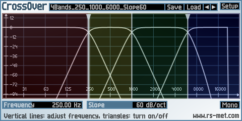
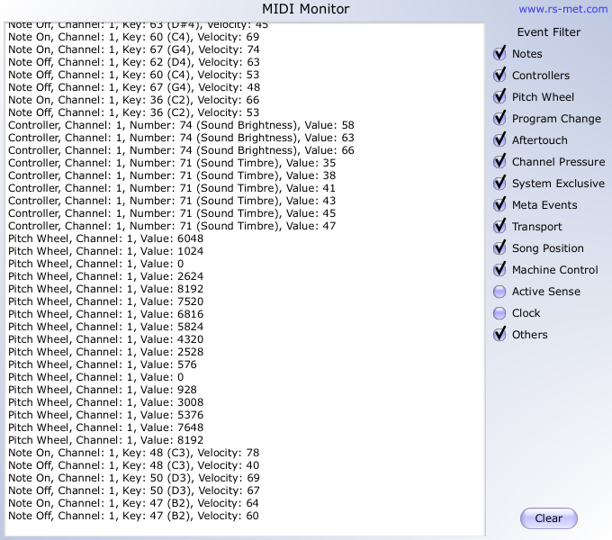

ToolChain
|
|
Key Features
- connect an arbitrary number of RS-MET effects in series
- you may put an instrument at the front of the chain
- 9 built-in processors, more to come
- supports Win/VST2/x64 and Mac/AU
- replaces all older single-purpose RS-MET plug-ins
|
|
ToolChain is a plugin that is actually many plugins in one. It acts as a shell which lets
you set up a chain of effects, one processed after another in a series connection. You can also
put instruments at the front of the chain. At some point, i was just tired of maintaining a
separate project for each of my plugins, so i lumped them all into one. The download archive
contains a Windows VST x64 version, a Mac AU version, a support folder containing presets,
sample-content, etc. and a textfile with manual installation instructions.
|
For legacy reasons, the older versions of the plugins which are now supposed to be replaced by
ToolChain are still available below. At the moment, not yet all of them are integrated into
ToolChain, but this is what is going to happen soon. Also, the older plugins may still be needed,
if you are using a 32-Bit (x86) host.
EasyQ
|
|
Key Features
- unlimited number of filter stages ("bands")
- each stage can be one of the following characteristics: bell, low-/high-shelf,
low-/highpass (6 or 12 dB/oct), notch
- clean equalization - no additional colorations
- low CPU usage
- +-48 dB gain range
- stereo modes: linked, left/right, mid/side and mono
- minimum phase response
|
|
EasyQ is an easy-to-use equalizer with an arbitrary number of filter stages in series
connection. Each of the filter stages can operate in one of the following modes:
peak/cut (aka bell or parametric EQ), high- or low-shelving, notch and low- or highpass (both
with either 6 or 12 dB/oct slope). EasyQ is also easy on the CPU and just does what an EQ is
supposed to do without performing any additional voodoo. As such, it is well suited to serve as
a go-to EQ for the routine equalizing tasks.
|
CrossOver
|

|
Key Features
- Splits signal in up to 4 frequency bands
- separation between bands up to 96 dB/oct
- flat sum due to Linkwitz/Riley filters
|
|
CrossOver is a plugin to split an incoming signal into several (at most 4) frequency ranges.
It can be used to build your own multiband effects within a modular (sub)host environment.
By using only 2 bands, you can also create bass-effects. These are effects which keep the low
frequency range dry and affect only the high frequency range. The band-splitting is done by
complementary pairs of Linkwitz-Riley lowpass/highpass filters, the slope of which is
adjustable between 12 and 96 dB/oct. For configurations with more than 2 output bands, the
signal is first split into 2 bands (low and high) and then the low or high or both bands is/are
split further, thus the splitting is done in a hierarchical manner.
|
EngineersFilter
|
|
Key Features
- ultra-steep filters possible
- design methods: Bessel, Butterworth, Chebychev I and II, elliptic, Papoulis
- characteristics: lowpass, highpass, bandpass, bandreject, low-/high shelf, peak
|
|
EngineersFilter is a filter plugin that allows for extremely steep filtering. It achieves this
by implementing high order IIR filter design methods that are commonly used in science and
engineering, namely Butterworth, Chebychev, inverse Chebychev, elliptic (aka Cauer), Bessel and
Papoulis filters. Each of these filter design methods can be applied to create lowpass,
highpass, bandpass, bandreject, high/low shelving and peak/dip filters of orders up to 20.
|
FuncShaper
|
|
Key Features
- arbitrary transfer functions via math-expressions
- input- and output-filters
- up to 16x oversampling
|
|
FuncShaper is a waveshaping distortion plugin based on a mathematical expression evaluator. You
can enter an expression to create the function which will be used as waveshaping transfer
function. The expression may contain arithmetic operators, well known standard functions (sin,
cos, tanh, etc.) as well as some proprietary special functions, which are specifically geared
towards the application domain (soft-clipping, Chebychev polynomials, etc.).
|
Track Meter
|
|
Key Features
- level meters for left, right, mid and side signals
- adjustable ballistics with predefined values for VU and PPM
- correlation meter
|
|
Track Meter is a plugin to display the current level of a stereo input signal separately for
the left, right, mid and side channels and also to display the cross-correlation between the
two channels. You may freely adjust the rise- and fall time constants (collectively called
ballistics). Convenient buttons exist for using the standardized ballistics for VU and PPM
measurements.
|
Signal Analyzer
|
|
Key Features
- oscilloscope and spectrum analyzer
- independent zoom for both axes
- synchronization to input signal (oscilloscope)
- spectral resolution up to 32768 bands
|
|
Signal Analyzer is a combined oscilloscope/spectrum-analyzer plugin for inspecting signals in
realtime in the time- and frequency domain. The oscilloscope's refresh rate may be synchronized
to the period of the incoming signal to stabilize the plot of periodic waveforms. Both views may
be frozen and the frozen display can be exported into a .png file.
|
Channel Matrix 2x2
|
|
Key Features
- arbitrary redistribution of 2-channel (stereo) signals
- boost, M/S encode/decode, swap channels, invert polarity, etc.
|
|
Channel Matrix 2x2 is a plugin which lets you matrix-multiply the signals of two input channels
in order to obtain another two signals which will appear at the two output channels. Example
uses are mid/side encoding/decoding, mixing stereo to mono, switching channels left for right,
boosting or attenuating signals, inverting signal polarity, etc.
|
Pitch Shifter
|
|
Key Features
- granular-based pitch shifting algorithm
- adaption of grain-length to input signal period
- feedback
|
|
Pitch Shifter is a plugIn to shift the pitch of an incoming audio signal. By mixing the
pitch-shifted signal with the original signal via the dry/wet control, basic detuning,
octaving and harmonizing effects are also possible. This shifter is based on a delayline with
two crossfaded read pointers. Such an architecture allows for feedback - and feedback gives the
potential to rather drastic, weird special effects like monster-voices, flanger-like effects
and more.
|
MIDI Monitor
|

|
Key Features
- shows note-events, controllers, pitch-wheel and much more
- event filter (to show only events that are of interest)
- 2 versions available (for VST-effect and VST-instrument slots)
|
|
MIDI Monitor is a plugin which shows you the incoming MIDI messages. Because some hosts treat
instrument- and effect-plugins differently (and do not allow plugging one kind of plugin into
a slot of a different kind), there is an 'instrument' and an 'effect' version of the plugin to
make it pluggable everywhere. The MIDI-events are passed through unchanged, the same holds for
any incoming audio signal.
|
{kind=link}
{kind=link}
{kind=link}
{kind=link}
{kind=link}
{kind=link}
{kind=link}
{kind=link}
{kind=link}
{kind=link}
{kind=link}